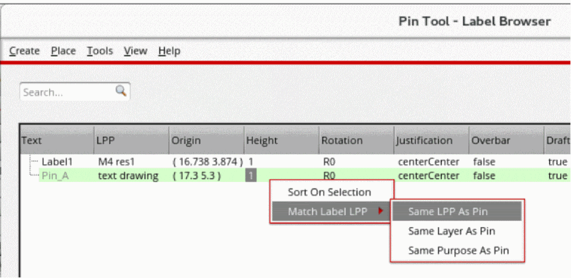
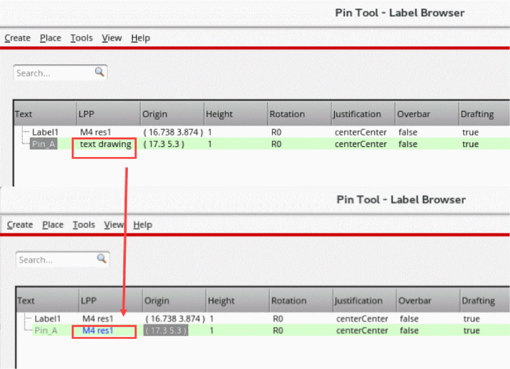

Re-layering Labels to Match Pin Layers
When you run certain pin-related commands, such as the Pin Planner and Pin Optimizer, pins in the design are re-layered. You can use the options in the Label Browser of the Pin Tool to control the re-layering of the associated pin labels.
To specify the pin label layer settings:
-
Choose Plan – Pin Planning – Pin Tool.
The Pin Browser is displayed. - Choose View – Labels to open the Label Browser, which displays information about labels of top-level pins in the current cellview.
- Select the required pin labels in the Label Browser.
-
Right-click to display the shortcut menu and choose one of the following options from the Match Label LPP shortcut menu.
 - Click Apply to reflect the changes in the Label Browser.
In the following example, when you select Same LPP as Pin for Pin_A, the label layer purpose is updated in the Label browser and displayed in blue.

Related Topics
Planning Placement of Top-Level and Level-1 Pins
Return to top